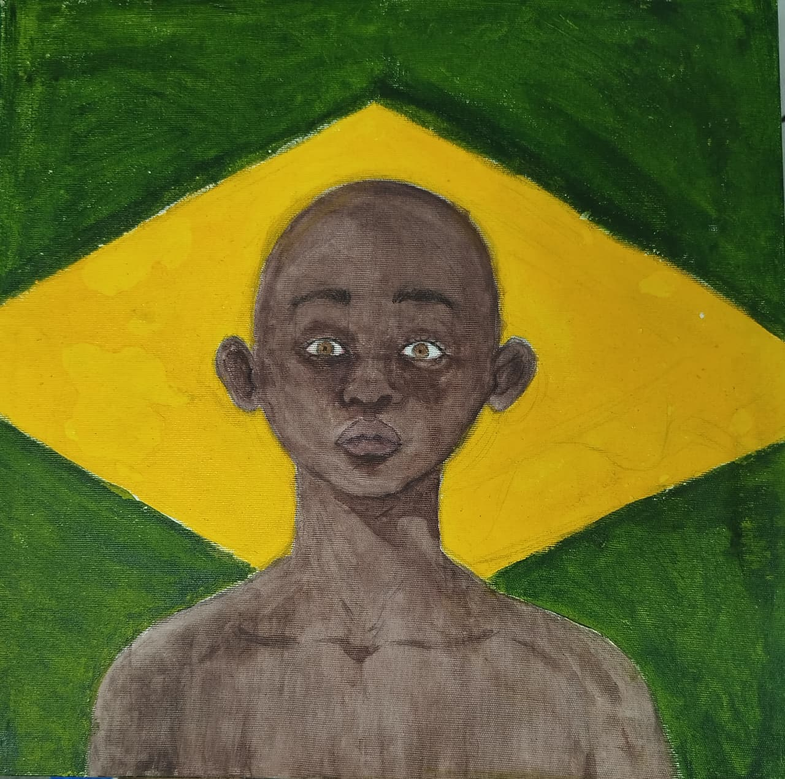

REFERÊNCIA 01
A identidade brasileira
A bandeira representa o país e a ideia de pertencimento à nação.
ARTE • IDENTIDADE • PERTENCIMENTO
A consciência negra também é reconhecer, valorizar e dar visibilidade a quem construiu — e continua construindo — a história do nosso país.
Conheça a nossa obra ↓
“A história do Brasil também tem a cor, a cultura, a força e a presença da população negra.”
O PROCESSO CRIATIVO
Antes de chegar ao resultado final, reunimos referências visuais que dialogam com a identidade brasileira, a resistência e a valorização da população negra.
A bandeira representa o país e a ideia de pertencimento à nação.
A imagem evoca a luta histórica por direitos, respeito e oportunidades.
O RESULTADO FINAL
Uma criança negra ocupa o centro da composição. Ao fundo, a bandeira do Brasil reforça a mensagem de que essa história pertence a todos nós — e que não existe futuro justo sem reconhecimento, respeito e inclusão.
PARA ALÉM DA IMAGEM
Uma imagem pode carregar memória, identidade e a esperança de um futuro mais igualitário.
A obra apresenta uma criança negra como figura central da composição, tendo a bandeira do Brasil ao fundo. A imagem pode representar a importância da população negra na construção da identidade e da história brasileira, destacando sua participação na formação cultural, social, econômica e política do país.
Historicamente, a população negra teve um papel fundamental na construção do Brasil, embora tenha enfrentado séculos de escravização, violência e desigualdade. Mesmo após a abolição da escravidão, em 1888, por meio da Lei Áurea, os negros não receberam condições adequadas de inclusão social, enfrentando dificuldades para conquistar direitos e oportunidades.
Nesse contexto, a figura da criança negra diante da bandeira brasileira pode simbolizar resistência, luta por igualdade, pertencimento e reconhecimento. A bandeira reforça a ideia de que a população negra também faz parte da identidade nacional e tem grande importância na história e no desenvolvimento do Brasil.